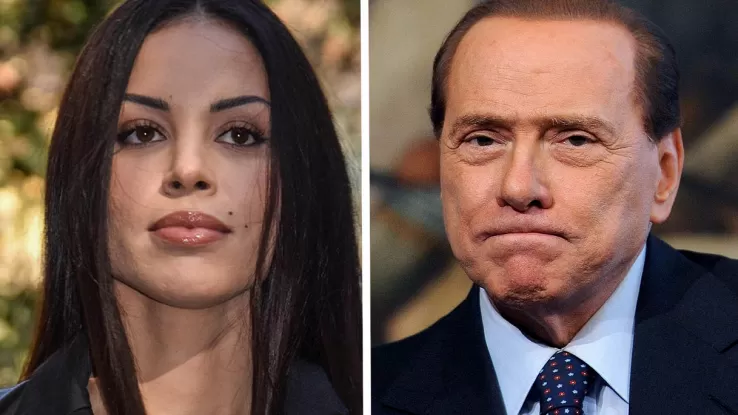

Il caso Ruby è uno scandalo che ha coinvolto Silvio Berlusconi, accusato di aver pagato per ottenere prestazioni sessuali dalla giovane marocchina Karima El Mahroug, nota come "Ruby Rubacuori," all'epoca minorenne.Il caso Ruby è uno scandalo che ha coinvolto Silvio Berlusconi, accusato di aver pagato per ottenere prestazioni sessuali dalla giovane marocchina Karima El Mahroug, nota come "Ruby Rubacuori," all'epoca minorenne.Il caso Ruby è uno scandalo che ha coinvolto Silvio Berlusconi, accusato di aver pagato per ottenere prestazioni sessuali dalla giovane marocchina Karima El Mahroug, nota come "Ruby Rubacuori," all'epoca minorenne.
